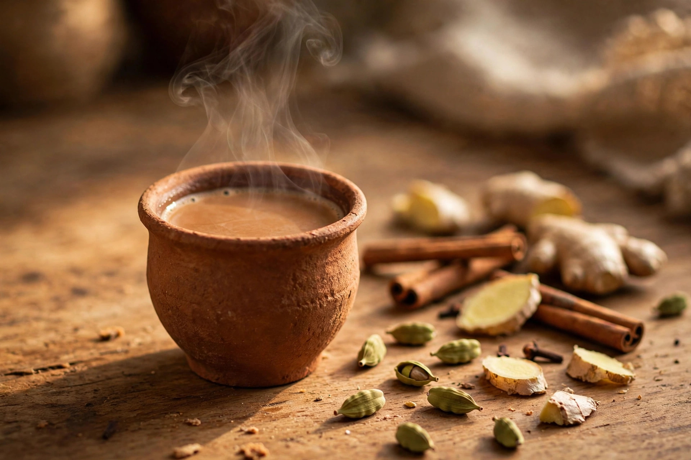

Sign in to save favorites. Sharing instead of copying keeps this library free.

Masala Chai
For the spice mix
4 green cardamom pods (chhoti elaichi), crushed
1-inch cinnamon stick (dalchini)
4 cloves (laung)
1-inch fresh ginger (adrak), sliced
For the chai (2 cups)
2 cups water
2 tsp Assam black tea leaves
1 cup milk
Sugar to taste
Method
Crush the cardamom, cinnamon, cloves, and ginger coarsely with a mortar and pestle.
Bring the water to a rolling boil, add the crushed spices, and simmer 2–3 minutes until fragrant.
Add the tea leaves and boil 1 minute more for strength.
Pour in the milk and sugar; bring back to a boil, then simmer 2 minutes until the color turns a rich caramel brown.
Strain into cups and serve piping hot.
Sharing instead of copying keeps this library free.
Kids love it
Caffeine-free “chai” for kids: swap the black tea for rooibos leaves (same dark color, no caffeine), keep the spices and milk, and go light on the sugar. Always let an adult handle the boiling and pouring.
“Kids love it” means flavors young taste buds enjoy — not safety for every child. Adults must supervise knives, heat and appliances — written for adults to prepare with children.
Story behind this dish
Tea arrived in India on British plantations, but Indians made the bitter colonial brew their own — simmered with milk, sugar, and the spice box: ginger (adrak), cardamom (elaichi), cloves. The half-glass “cutting chai” of Mumbai's trains and street corners turned it into the country's everyday ritual.
Please read: this recipe is ai-assisted · human-reviewed · not kitchen-tested. It was researched with AI assistance, reviewed by a human, and never tested in a kitchen — times, temperatures and quantities may need adjusting. Always use a food thermometer and follow current guidance from authorities such as the USDA. If something looks or smells wrong, don’t eat it. Allergies: ingredient lists are informational and may be incomplete — read every product label yourself, and if you are unsure, don’t eat it. This is not medical or nutritional advice.
Tried it? Tell us.
Submissions are read by our team before anything appears publicly.